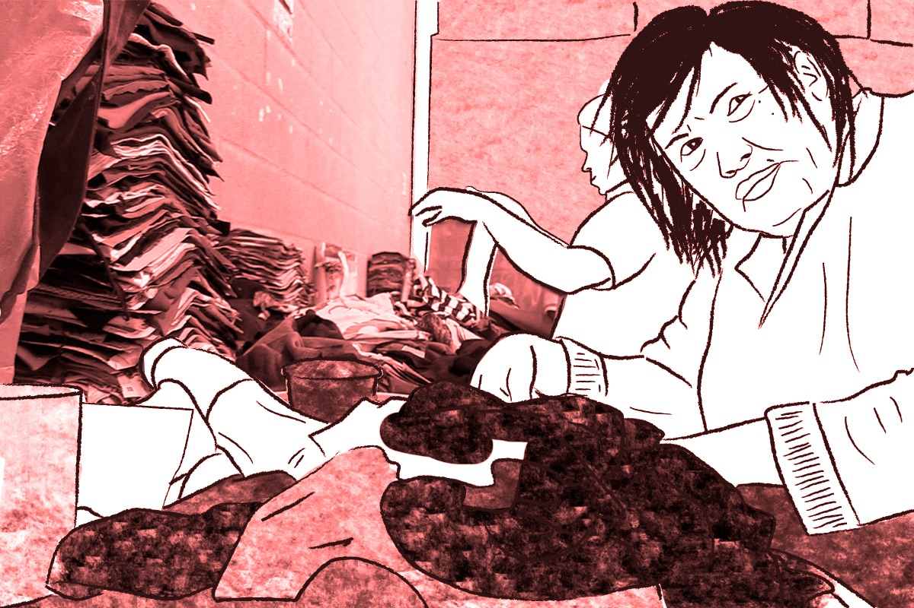
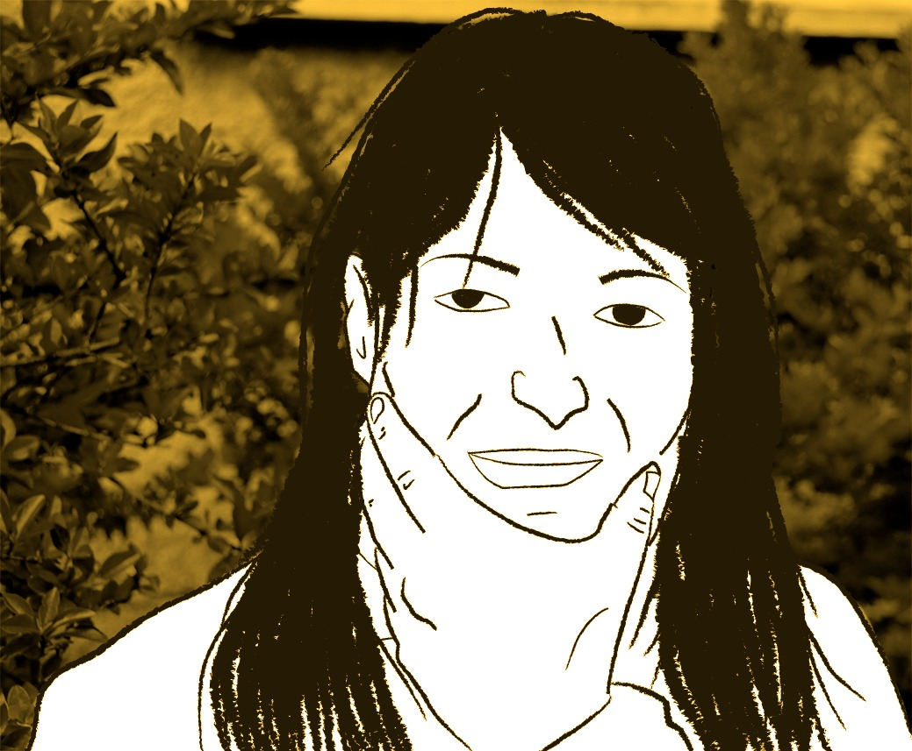
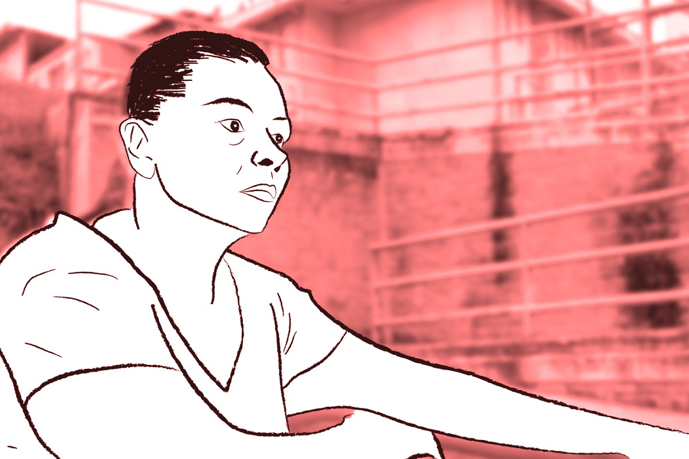

“AQUÍ HAY SERES HUMANOS”
Cristina miraba fijamente la cámara tratando de descifrar cómo esa caja negra podía tomar fotos. Desde que salió de su celda no había pronunciado ninguna palabra; solo posaba y luego señalaba la pantalla para ver su retrato. Después de unos minutos preguntó, algo tímida, si podían tomarle una foto entre los arbustos para verse como las modelos de las revistas. Con sus manos en la cintura, agachó su cabeza y sonrió mientras decía: estoy lista.
En el 2009, Cristina fue capturada por el homicidio de su esposo y condenada a 34 años de prisión. Primero estuvo en la antigua Reclusión de Mujeres de Medellín, luego fue trasladada al establecimiento El Pedregal. Durante su tiempo en la cárcel, ella ha sido diagnosticada con esquizofrenia paranoide, depresión, epilepsia (herencia materna), trastorno esquizoafectivo, delirio de persecusión, ansiedad y dislipidemia mixta.
El primer recuerdo que tiene Cristina sobre el diagnóstico de su enfermedad mental ocurre en el hospital al que su mamá la llevaba en su infancia. “Mi mamá me tuvo en un hospital mental a los 14 años porque yo era loca. Yo rasgaba toda la ropa y rasgaba todo (...) Ahí me dijeron que tenía trastornos mentales”, comenta luego de algunas respuestas cortantes.
Su siguiente recuerdo sobre su enfermedad es su ingreso a la antigua reclusión, donde recibió un examen inicial y fue diagnosticada con depresión, ansiedad y delirio de persecusión. Desde entonces ha estado en el programa de psiquiatría por la persistencia de sus alucinaciones y la pérdida de conciencia del paso del tiempo. Algunas veces afirma llevar cuatro meses privada de la libertad, pero en otras comenta que llevaba un año.

“Ella no sabe cuánto tiempo lleva, cuánto tiempo tiene que pagar, cuánto tiempo no ve a su mamá, cuánto tiempo no ve a su familia”, comentó Daniela, quien es la mejor amiga de Cristina. Ellas dos se conocieron hace seis meses mientras cosían, trabajo que usualmente realizan dentro de la cárcel. Desde entonces Daniela, al conocer la situación de Cristina, disfruta conversar con ella sobre sus “amigos imaginarios” o lo que hace con su “novio” Javier.
“Ella habla incoherencias entonces yo la molesto. Ella ve a sus amigos imaginarios y tiene un amigo que se llama Javier; es el novio. Así que le preguntó: ¿qué hizo anoche con Javier? Entonces a ella le da risa”, comenta Daniela.
Para mitigar esa “gente extraña” o “eliminar la cabeza del cuerpo”, como ella dice, Cristina toma dos pastillas diarias: una en la mañana cuando Catalina Durán, enfermera de GIH, hace su recorrido habitual y verifica que se la tome, y otra en la noche con la ayuda de sus compañeras de celda o la dragoneante de turno. A Cristina le recetaron Pipotiazina para reducir las alucinaciones y generar un efecto sedante.
Pero su vida en El Pedregal no gira entorno a su enfermedad mental. A las 5:00 a.m. Cristina se levanta con las demás internas para arreglarse y desayunar. Sin embargo, ella, a diferencia de las otras mujeres, espera emocionada a que sean las 8:00 a.m. para trabajar en el salón de lencería y bordados. Ahí, de lunes a viernes, cose camisas o “trapitos” que luego el INPEC le ayuda a vender a $30 mil pesos para comprar sus alimentos y utensilios personales.

Aunque la mayoría del tiempo Cristina es callada, el sonido de su risa se escucha casi todo el día en el salón de lencería y bordados. Daniela tiene la costumbre de consentir y molestar a Cristina para verla alegre; le hace bromas de sus “amigos imaginarios”, “novio” e incluso de su delito. Daniela tomó la decisión de cuidar de su mejor amiga, debido a que sabe que no tiene contacto con sus hermanas y sus tres hijos desde que ingresó a la cárcel. A Cristina la única persona que la llama o la vista es su mamá.
“Yo le digo cada ratico: ¿quién es la alegría del taller? Ella dice: yo. Y le digo: Cristina, usted no es la alegría, soy yo, y ella pelea”, relata Daniela.
Cristina es apreciada por las dragoneantes que la distinguen y ha encontrado un hogar en sus compañeras de trabajo. “En el taller la queremos mucho, la tenemos en cuenta. Ella se siente bien. Por ejemplo, llega el viernes y pregunta:
-¿Mañana toca venir?
-No Cristina, dos días en el patio, responde Daniela.
-¡Ay no, que pereza! Ustedes me hacen mucha falta, exclama Cristina.
Entonces ese es el ánimo de ella, vernos a nosotros”, contó Daniela.
Jenny sabía que algo no andaba bien desde que Alejandra, su novia, había sido llevada a la UTE (celda de castigo). La ansiedad y el desespero por saber de su pareja la llevó a tomar la decisión de hacerse varias cortadas en los brazos para poder salir de la celda, pero la dragoneante de turno no le puso atención. Aún así, continuó insistiendo hasta que logró conseguir un permiso y salir hacía la escuela en donde las internas ven clases. Tras varias horas de caminar por los pasillos, entre los salones, preguntando por su pareja, encontró el abrazo de una de sus amigas y la noticia de que Alejandra se había suicidado.
Después de la muerte de Alejandra, Jenny ingreso al programa de psiquiatría y fue diagnosticada con depresión severa y farmacodependencia. Sin embargo, ella ya sabía que padecía estas dos enfermedades. Antes de ingresar a El Pedregal había estado en varios centros de rehabilitación por su consumo de drogas. En alguno de estos lugares había conocido a una enfermera que le facilitaba Fluoxetina y Clozapina para disminuir la ansiedad de consumir y estabilizar la depresión.
Jenny, quien tiene 34 años, afirma conocer la raíz de su depresión y su adicción a las drogas. A los ocho años salió de su casa a vivir en las calles de Medellín después de que su papá la echara de su hogar al saber que era lesbiana. El resto de su familia, su mamá y hermanos, decidió ignorar el tema. El centro de la ciudad de la Eterna Primavera se convirtió en el hogar de Jenny, a quien desde entonces le gusta que le digan Francisco. Allí aprendió a trabajar con las bandas criminales de la zona, a consumir toda clase de drogas y a soportar el dolor por la muerte de dos mujeres que amó.
“Jenny es un proceso de duelo no resuelto durante toda su vida. Viene de una familia disfuncional en la que el padre fue muy hostil y la madre muy permisiva, y esto terminó en una depresión mayor”, Blanca Sánchez, funcionaria administrativa del INPEC.
“Tanto el vacío de las parejas como no contar con mi familia hizo que me refugiara en el chorro y las drogas”, cuenta Francisco mientras frota sus manos contra su regazo. Sus adicciones comenzaron fumando marihuana y después consumiendo otras drogas que, en el centro de Medellín, eran (son) fácil de conseguir. Con el tiempo, conoció el alcohol y, para intensificar su efecto, lo mezclaba con yogurt.
Francisco, en la década de los noventa, llegó a Bogotá luego de salir de Medellín y viajar por Manizales y Pereira. El día que llegó a Bogotá le robaron las manualidades que traía para vender. Sin otra opción, decidió irse a la Calle del Cartucho, zona de la ciudad conocida por el comercio ilegal de drogas. Allí consiguió trabajo vendiendo marihuana gracias a un hombre que la vió llorando en la calle. A los dos meses, Francisco estaba sumergido en el bazuco. Según ella este fue el punto más alto de su consumo.
—El man me dijo un día: “Vos llegaste tan bien y estás tan degradada. Mire si se quiere ir, yo le doy lo del pasaje. Pero si se queda, yo ya no trabajo más con usted”. ¿Y sabe qué? Me organicé, me bañé, comí y me devolví a Medellín—, recuerda Francisco.
Al regresar a Medellín, Francisco volvió a establecerse en el centro y a trabajar con las bandas de la zona. En diciembre de 2014 fue capturada y condenada a 5 años y medio por venta de estupefacientes. Con su ingreso a El Pedregal, le decomisaron sus medicamentos para la depresión por la falta de una fórmula médica. En el examen inicial quedó constancia de sus antecedentes mentales. Francisco desde que está en la cárcel ha atentado contra su vida tres veces.
No fue sino hasta la muerte de Alejandra, después de dos años de entrar a El Pedregal, que Francisco fue ingresado al programa de psiquiatría. La primera y única cita que tuvo con un psiquiatra de la IPS Grandes Ideas Hospitalarias (GIH) fue ocho días después del incidente de su pareja. En esa ocasión le recetaron Fluoxetina y Amitriptilina para nivelar las horas de sueño y disminuir la ansiedad de consumir sustancias psicoactivas.
“El psiquiatra, le digo la verdad, yo he visto el psiquiatra solo una vez (...) Yo creo que es negligencia del Estado, porque cada dos o tres meses viene un psiquiatra y cómo habemos (sic) muchas personas que tomamos medicamentos entonces contaditas las buenas que el psiquiatra las vea”, comenta Francisco.
Sin embargo, según Francisco, los medicamentos psiquiátricos que le recetaron no han tenido un efecto positivo en ella. Al contrario, “la Fluoxetina me genera más ansiedad y no me sirve para la depresión, porque sigo llorando más que antes. Y el otro que es para dormir me está robando el sueño; duermo una hora o hasta la medianoche”, explica mientras agita sus manos.

Ya que su ansiedad y depresión la llevan a consumir drogas, ella tomó la decisión de solicitar su traslado al patio del Programa de la Paz, en donde varias mujeres desarrollan un proceso especial de resocialización. Y, aunque ella no asiste al programa, ha decidido desintoxicarse por voluntad propia, pues El Pedregal no cuenta con un grupo de narcóticos anónimos.
A Francisco le quedan cerca de tres años y medio de condena. Apenas la cumpla, quiere hacer un curso de enfermería y luego hacerse cargo de su mamá. La enfermera que conoció en uno de los centros de rehabilitación le aseguró pagarle el estudio.
Karen llegó al salón de visitas con su característica sonrisa; esa que, en vez de ir de oreja a oreja, forma un círculo semiperfecto con sus labios que permite dejar ver hasta los dientes de atrás. En la conversación, Karen no dejaba de sonreír mientras hablaba de sus hijos, su esposo, su carrera y lo orgullosa que se siente de sí misma. Nadie se imaginaría que en cuestión de minutos esta mujer, que irradia alegría y fuerza, dejaría asomar un par de lágrimas al explicar la depresión, ansiedad y desespero que siente desde que entró a la cárcel.
Desde hace seis meses Karen está en el programa de psiquiatría. Según ella debió ingresar por una cita médica general o cuando tuvo la revisión del Bypass gástrico, porque de otra manera no sabe cómo terminó siendo parte de las ‘psiquiatricas’. “Aquí a uno lo entran. Pues según lo que le vean a uno (el médico) cuando lo revisan”, explica Karen al manotear.
El diagnóstico dado por uno de los psiquiatras de la IPS Grandes Ideas Hospitalarias (GIH) a Karen fue depresión y farmacodependencia. Ella recuerda haber tomado ocasional fluoxetina como antidepresivo y, por los problemas con su familia materna, empezó a fumar marihuana y consumir perico a los 28 años, antes de ingresar a la cárcel. “Mi depresión viene desde que mi familia me dio la espalda. Me pusieron condiciones: que era mi esposo o lo material. A raíz de que lo ponen a uno en una balanza uno cae en las drogas, porque usted cree que es el único medio de salir de todo lo que está viviendo”, comenta Karen.
Karen fue criada por su papá junto a sus dos hermanos varones. Durante su infancia, su mamá se fue de la casa a Estados Unidos y, para evitar que sus hijos sintieran el abandono, el padre de Karen escribía cartas falsas. Sin embargo, a diferencia de sus hermanos, para Karen la ausencia de su figura materna fue un vacío que nunca pudo llenar.
“Ha sido duro que mi madre me llame a un lugar de estos y me diga: Karen, ¿qué más iba a esperar de usted? Pero hasta que llegué acá ella no sabía que tenía una hija profesional”, comenta Karen.
La relación de Karen con su mamá y sus hermanos empeoró cuando se casó por segunda vez. Según Karen, su familia no lo acepta por dos razones: la diferencia de edad que hay entre los dos; él tiene 27 años y ella 40, y por el color de piel; su esposo es afrodescendiente.
A pesar de la oposición, Karen conformó un hogar con su esposo y su hijo menor del primer matrimonio. La pareja empezó a trabajar en la carrera musical de él hasta llegar a ser reconocido en algunos corregimientos de Medellín. Así fue como los dos con el tiempo llegaron a conocer al presidente de la Junta de Acción Comunal del barrio Limonar Uno del corregimiento San Antonio de Prado de Medellín.

La versión de la Fiscalía, publicada por un medio de comunicación, aclara que el esposo de Karen asesinó al presidente de la junta y Karen fue cómplice del crimen. En la publicación informan que “de acuerdo con la investigación adelantada por un Fiscal Seccional de la Unidad de Vida, días antes del ataque, el agresor le reclamó al dirigente cívico un dinero que supuestamente le adeudaba por una presentación artística”. Según Karen esto no es la verdad.
“El homicidio sí lo hizo mi esposo, pero el tipo me iba a violar. Entonces al ser una figura pública nadie podía creer “lo que hacía”. Mi esposo lo pilló en el acto cuando el hombre me estaba golpeando y ahí fue donde pasan las cosas. Yo recibí el arma, claro, muerta del susto”, grita Karen desesperada y llorando. A pesar de su versión, el esposo de Karen fue condenado a 22 años en una prisión de Ibagué y Karen a 17 años en el establecimiento El Pedregal.
“No, nunca, nunca me imaginé llegar a un lugar de estos”, comenta Karen.
Para sobrevivir en El Pedregal, Karen ejerce su carrera de esteticista y estilista. Vende paquetes de 15 masajes a $30 mil pesos a sus compañeras de patio y cuando puede maquilla gratis. “Lo que me interesa es que las otras personas vean que el trabajo que yo hago está bien hecho y que gusta, porque así uno tiene esperanzas de tener más oportunidades en este lugar para salir adelante”, cuenta Karen.

Sin embargo, el encierro y el sedentarismo que se vive en una cárcel colombiana han hecho que Karen se autoflagelara por primera vez y empezara a tener alucinaciones con brujas y demonios. Una noche, relata ella, después de dar vueltas tratando de conciliar el sueño, sintió cómo su cuerpo dejó de recibir sus órdenes y se paralizó. En medio del desespero, escuchó voces que le susurraban incoherencias y presencias atemorizantes. La única salida que vio en ese momento fue concentrarse en uno de sus dedos gordos hasta que después de unos minutos pudo moverlo.
Para Karen los medicamentos psiquiátricos que está tomando le están afectando no solo el sueño, sino que le generan más alucinaciones, depresión y ansiedad de consumir. Apenas ingresó al programa de psiquiatría le recetaron Clonazepam y Clozapina que, según ella, le ayudaban a sobrellevar la situación, pero la segunda vez que vio al psiquiatra (lo cual fue hace cinco meses) le cambiaron la medicación a Amitriptilina y Zentralina.
Karen por el momento está esperando la autorización de traslado al establecimiento en donde está su esposo. “Mi esposo ha sido mi apoyo moral”, dice Karen mientras vuelve a mostrar esa sonrisa peculiar.